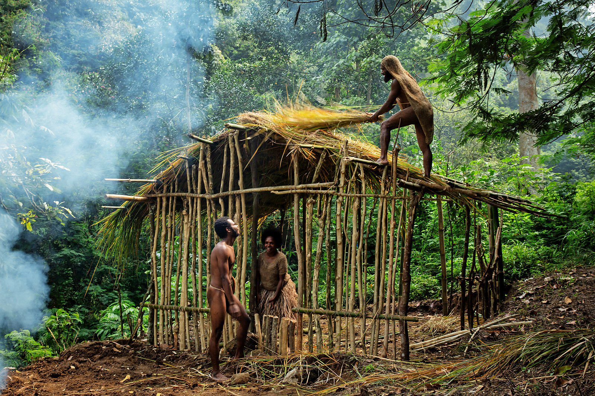

Festival Seren Taun
Festival adat Seren Taun merupakan bentuk syukur masyarakat adat Sunda...
Festival adat Seren Taun merupakan bentuk syukur masyarakat adat Sunda...

Tradisi Bakar Batu merupakan salah satu tradisi penting di Papua Tengah dan Papua Pegunungan yang berupa ritual memasak bersama-sama warga satu kampung yang bertujuan untuk bersyukur, kelulusan, bersilaturahmi (mengumpulkan sanak saudara dan kerabat, menyambut kebahagiaan seperti kelahiran, perkawinan adat, penobatan kepala suku), atau untuk mengumpulkan prajurit untuk berperang.[1] Tradisi Bakar Batu umumnya dilakukan oleh suku pedalaman pegunungan, seperti di Lembah Baliem, Lanny Jaya, Nduga, Pegunungan Tengah, Pegunungan Bintang, Jayawijaya, Tolikara, Yahukimo dll.